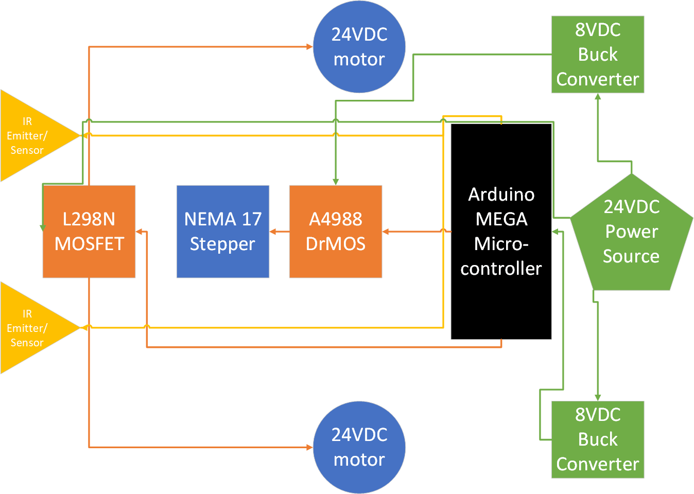
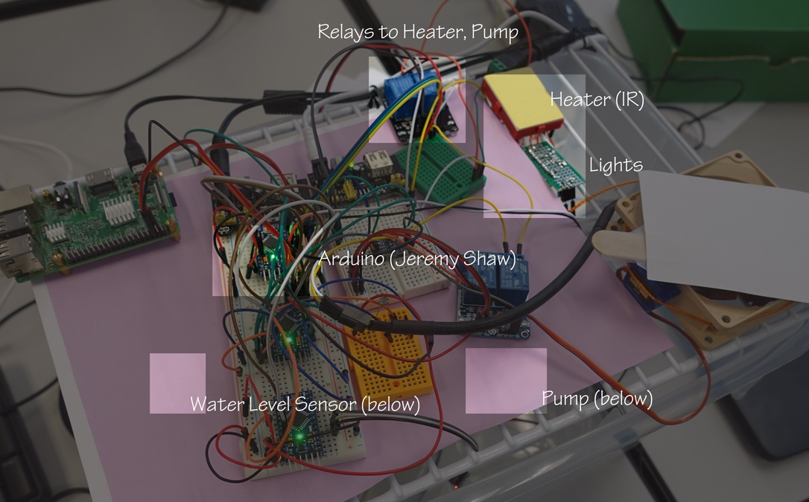

About Me
B.S. Computer Engineering, California State University, Sacramento. Graduated May 2020.
Seeking hardware validation and firmware engineering role. I would love to work in ASIC/RTL design and bringup.

Fan Duct - Github
Summer 2019

In the sweltering California heat of Summer 2019, I designed and 3D printed a fan duct to reduce hot air recirculation within my desktop computer, with the goal of reducing the CPU's load temperature.
This required learning FreeCAD (3D CAD), 3D printing, and how to design a product (as this was uploaded for others to use). In testing with Cinebench R15, I was able to reduce load temperatures from 85C to 77C.
JAWOS - Github
Fall 2019
Implemented a basic real time operating system in C and x86 assembly for CSUS CpE159 Operating System Pragmatics. Utilized a linux-based, fully virtualized development environment and bare metal to validate functionality.
During this class, I realized there little altiurism in helping others! I learned more from dissemination, than from implementing this course's operating system. To effectively assist other teams, I had to reevaluate every line of my code, the decisions behind each line of code, and the code's impact on the rest of the OS. This, more than anything else, helped me excel (!) in this class and progress as a effective teammate and an engineer.
Elderly Assistance Robot - Github
Fall 2019 to Spring 2020
{kind=link}
System design; creating a small store and retrival robot to help mitigate the need for physical activity. Basically a go-fetch-bot, with certain limitations in what it can take, and where it can store its loot.
MicroGreenhouse - Github
Spring 2018
{kind=link}
Designed and created a remote-controlled greenhouse. Mainly learned basics of project management, team dynamics, and the importance of documentation (in advance of actually needing it).
Final Semester @ CSUS
Spring 2020
CpE191 - Senior Design II
Followup to the first semester of Senior design, wrapping up various aspects of the project and course.
EEE196A - PCB Design
A nearly end-to-end PCB design class, starting with creating individual components, schematic layout, board layout, and finally the range of required data for fabrication and assembly. Also covered are various industry standards, the reality of PCB fabrication and its effet on board design, etc.
Past semester @ CSUS
Fall 2019
CpE190 - Senior Design I
Systems design, largely focused on finding a societal problem, proposing a solution, and the various design parameters necessary for a successful project. We chose to pursue the Elderly Assistance Robot.
EEE185 - Modern Communications Systems
A fun mathematical continuation of EEE180 and ENGR120, along with a mathematical analysis of some of the signaling methods we learned in CpE142, 186, 166, etc and in particular, the bandwidth + power considerations for them (i.e, why NRZ vs Manchester), also basic wireless communication (AM/FM/PM systems, even some specific setups such as the Armstrong receiver).
CpE159 - Operating System Pragmatics
OS implementation in C and x86 ASM, with some help from SPEDE libraries
CpE151 - CMOS & VLSI
Somewhat of a continuation of EEE108, largely focusing on digital logic implementation on basic silicon layers, and various design considerations.
CHIN120 - Chinese History
Quite a fun class, largely condensing the massive timeline of Chinese history into various key inflection points.
Past semester @ CSUS
Spring 2019
EEE108 - Electronics I
Semiconductors, from basic analog analysis of diodes, BJTs and MOSFETs, to lesser network/circuit analysis.
EEE180 - Signals & Systems
Math-based interpretation of signals and systems that transform signals.
ENGR120 - Probability and Random Signals
Complementary to EEE180 Signals & Systems, this one focuses on statistical methods of interpreting signals. We don't really do much with this until EEE185 in Fall 2019.
CpE142 - Advanced Computer Organization
We covered a lot of X86-related low level HW implementation tradeoffs, but most of the fun I had in this class was writing and running performance evaluations of threaded code (Amdahl's law), w.r.t. thermally constrained mobile devices vs a thermally unrestricted desktop. The short term thermal limits of a laptop are a particularly fascinating topic, given the difficulty of designing comprehensive heat dissipation solutions against burst/boost performance. I also learned "athena.ecs.csus.edu," which I had been running a number of threading performance benchmarks on was CSUS' webserver. Sorry :( We finished the semester with a basic, pipelined CPU in verilog (F D E M W - 5 stage). Also covered some I/O protocols and their encoding methods (e.g, 1 wire/Manchester & NRZ).
CSC139 - Operating System Principles
Somewhat complementary to CpE142 (above) and the later CpE159 in Fall 2019, we covered low level OS considerations, largely patterned off of *nix systems. Virtual Memory, memory paging, HDD access patterns, and the various data structures + algorithms associated with each topic.
Past semester @ CSUS
Fall 2018
CpE166 - Advanced Logic Design
A very fun followup to EEE/CpE64, covering more Verilog, VHDL, hierarchical design, and different hardware logic structures we could implement in HDL (State Machine, LFSR, Hamming, user I/O, etc).
CpE186 - Computer Hardware Design
A somewhat interesting class, that may have been overshadowed by CpE142 and CpE166. We did miss a couple of weeks this semester, due to the Camp Fire shutting down Campus for 2 weeks. We did cover Hamming code (again, see above), some I/O protocols (...), and data organization at the HW level (again...). One thing that did make this class stand out was fully evaluating what and how machine code affects and travels through the gates and wires of a basic CPU (in this case, Tanenbaum's - yes, that one - education JVM CPU ISA).
CSC134 - Database Management Systems
An unfortunately short but fun course exploring relational database models via SQL. The final project of this class was building useful views for a sample Yelp database (still ~8GB of data, pulled from the publicaly available Yelp database!), that really left me wondering more about the interpretation and usefulness of that data. Luckily, that lead me to become aware of Data Science.
EEE117 - Network Alaysis
Not what it sounds like at all. Networks of active and passive components... i.e, circuit analysis with diodes, OPAMPs, resistors, and MOSFETs!
This was also the first semester I managed to nab a spot on the Dean's Honor list, a distinction I would hold until my final semester, when unit count restrictions removed me from eligibility.
Past semesters @ CSUS
≤ Spring 2018
WIP
CpE64 - Intro to Logic Design
Very entry level course to binary logic, basic gates ("you only need 4 gates to implement any logic!" - Professor), and some discrete mathematics.
CpE138 - Computer Network+Internet
OSI model, TCP/UDP, larger organization of massive networks (Border Gateway Routing Protocol, name server propogation, etc), some Link Layer analysis of Switches, Routers, the various service algorithms for handling queues, along with the HW involved. HTTP. Not much L1 coverage. Many Python projects related to sockets, IGMP, HTTP, SMTP, etc. All were given in Python2, so I made it a challenge to myself to submit them in Python3. Turns out, a number of sockets/networking libraries had changed from 2->3, which made these projects much more fun.
CpE 185 - Computer Interfacing
Some X86 ASM, low level C, inline (X86) assembly in C, and lots of microcontroller-based projects.
CSC130 - Data Structure+Algorithm Analysis
It is exactly what it looks like and we have all been through this foundational class.